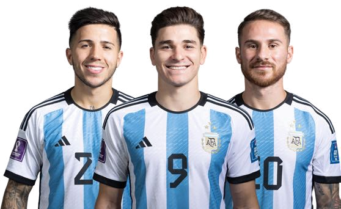

BUILD THE PLAYER.
BUILD THE FUTURE.
Elite football development through Argentine Football Association structured coaching & performance methodology — built for Indian ambition, from the first touch to a professional pathway.
MORE THAN AN ACADEMY.
A FOOTBALL RENAISSANCE.
Millions of children play football across India's feeder centres and neighbourhood clubs every day. What has always been missing is a structured system to find them, develop them, and carry them all the way to the top.
Amuzi Centre of Excellence exists to close that gap — partnering with the Argentine Football Association to bring one of the world's most productive talent pipelines to Indian football, from feeder centres to our flagship Centre of Excellence.
-
Why AFAA world-champion coaching methodology, adapted and certified for Indian academies.
-
The Centre of ExcellenceOur flagship destination — where India's most promising players train full-time to elite standard.
-
The Feeder NetworkA network of AFA-affiliated centres bringing structured, certified coaching closer to every child.
-
Why Structure MattersTalent isn't missing in India — the system to find and develop it is. That's the gap we're built to close.
SIX PILLARS. ONE PLAYER.
Every player is developed across six dimensions, built on Argentine coaching methodology — not just technical ability, but the complete footballer.
Ball mastery, passing, receiving, dribbling, finishing.
Every session begins and ends with the ball. Players build a technical foundation precise enough to execute under pressure, not just in isolation drills.
Game understanding, decision-making, positioning and team principles.
Players are coached to read the game, not just play it — understanding space, timing and team structure the way Argentine academies have taught for generations.
Speed, agility, coordination, strength and conditioning.
Age-appropriate athletic development builds durable, explosive players without compromising long-term physical health.
Confidence, discipline, resilience and mentality.
Football is decided under pressure. Players are trained to make split-second decisions with composure, on the biggest occasions.
Teamwork, communication, respect and responsibility.
A player's development off the pitch shapes their game on it. We build character alongside craft.
Data, analysis, feedback and individual development planning.
Every player's progress is tracked, reviewed and translated into an individual development plan — evidence, not guesswork.
WHERE DOES MY CHILD GO NEXT?
A structured, no-talent-left-behind journey — from a first touch at a feeder centre to full-time elite performance. Every stage has clear objectives, evaluation and a route forward.
Feeder Centres
Community & GrassrootsThe widest part of the pyramid. Every child who touches a ball at one of our feeder centres or community programmes is a possibility worth watching.
- Introduction to ball mastery & movement
- Football as habit, discipline and joy
- First exposure to structured coaching
Intermediate Centres
Structured AcademyWhere promise becomes a pathway. Players train under AFA-certified coaches, many for the first time under a formal development contract.
- Technical & tactical curriculum build-up
- Competitive league & tournament exposure
- Individual development plans begin
Centre of Excellence
Flagship DestinationWhere India meets the world. Full-time coaching, sports science, education and international exposure inside our flagship Centre of Excellence.
- Full-time elite training environment
- Sports science, psychology & nutrition support
- International exposure across South America, Africa, Europe and North America
The destination every young player aspires to reach — a full-time, world-class performance environment built on AFA methodology. Coaching, sports science, education and international exposure, all in one place.
- AFA-certified coaching staff
- Sports science & psychology
- AI-assisted performance analysis
- International exposure across South America, Africa, Europe & North America
- Structured education alongside training
- Direct pathway to professional trials

THE AFA ASSOCIATION
Amuzi Centre of Excellence has entered a strategic partnership with the Argentine Football Association (AFA) — bringing one of the most decorated football education systems in the world into our pathway.
Every coach inside an AFA-affiliated centre is trained and certified through AFA methodology before working with children.
A coaching philosophy built to train split-second decision-making under pressure — the hallmark of Argentine player development.
Structured exposure through training camps and exchanges across South America, Africa, Europe and North America — testing Indian talent against international standards.
We represent the player's interests off the pitch too — contracts, welfare and career guidance handled with the same care as their football development.
DEVELOPMENT YOU CAN SEE.
Every player's progress is tracked across technical, tactical, physical, psychological, social and match-performance markers — evidence, not guesswork.
Sample data shown for illustration only — individual player statistics are private and shared directly with families.
PLAYER. JOURNEY. OPPORTUNITY.
As our first cohorts progress through the pathway, their journeys will be featured here — with families' permission and full editorial care.
Real journeys, real names, real progress — published as our network matures.
This space is reserved for verified milestones only — trial call-ups, selections and international exchanges.
YOUR QUESTIONS, ANSWERED.
We know handing your child's football development to a new academy is a big decision. Here's what most parents ask first.
WE DON'T JUST TRAIN FOOTBALLERS. WE DISCOVER AND DEVELOP PLAYERS.
Partner with us.